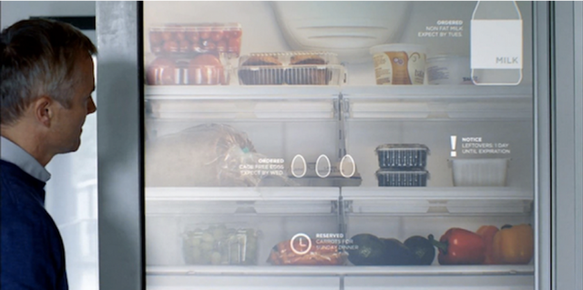

Grundidee
In erster Linie wollen wir unseren Nutzern eine Plattform bieten, die dabei hilft überschüssige Lebensmittel sinnvoll zu verbrauchen. Der Plattform liegt ein Foodsharing Konzept zugrunde, das im Gegensatz zu den etablierten Tauschplattformen einen inspirativen Charakter gegenüber dem Endanwender einnimmt. Unser primärer Fokus liegt dabei bei der Verwertung von Produkten, die ansonsten schlecht werden würden.
Der Kernidee des Austausches liegt das Mentale Modell eines Schaufensters zu Grunde. Ein Schaufenster kann auf mehrere Weisen interpretiert werden: dies ist zum Einen die Sicht des „Einräumenden“ und zum Anderen die desjenigen, der davor steht und das Schaufenster als Inspirationsquelle nutzt.
Jedes ansprechend gestaltete Schaufenster Bedarf einiger Planungszeit. Diese reduzieren wir für unsere Anwender auf ein Minimum. Einzige Voraussetzung um Teil des Schaufensters zu werden ist es, das man Lebensmittel abgeben möchte. Die Gründe für überschüssige Lebensmittel sind so vielfältig wie das Leben der Besitzer. Das fängt bei zu großen Verpackungsgrößen an und reicht über die Durchquerung der Planung bis hin zum mangelnden Überblick über die Waren in den heimischen vier Wänden.
Anwender sollen zu jeder Zeit durch ihr Schaufenster einen Überblick in die eigenen Vorräte erlangen. Das Inserieren von Lebensmitteln soll hierbei so einfach wie möglich sein, praktisch als würde man diese mit nur einem kleinen Handgriff ins Schaufenster der Gemeinschaft stellen können.

Das Gestalten des Schaufensters übernimmt ein automatisierter adaptiver Prozess unseres Systems. Ausgangsbasis bilden die eigenen Vorräte des Nutzers und die angebotenen Lebensmittel der Gemeinschaft. Das Augenmerk liegt primär auf der Verwertung von überschüssigen Produkten, die abzulaufen drohen. Dies wird kombiniert mit dem individuellen Geschmack und Ernährungstypen der Nutzer. Die Präsentation der Lebensmittel erfolgt in einem „Inspirationsfeed“ aus Rezepten, die aus den genannten Quellen generiert wird. Grundsätzlich wird jeder Nutzer einem regionalen/lokalem Raum zugeordnet, damit er primär Empfehlungen bzw. Angebote in seinem „Schaufenster“ vorfindet, die aus seiner näheren Umgebung sind. Die Angebotenen Lebensmittel können dadurch ohne große Umwege eingehen zu müssen abgeholt werden.
Für kochbegeisterte und kreative Nutzer mag ein einfaches Suchen von Lebensmitteln und Browsen durch die Angebote genügen, um eine Idee zu bekommen wie er diese in Hinblick auf ein leckeres Essen mit seinen Vorräte kombinieren kann. Auf der anderen Seite gibt es jedoch eine Großzahl an Personen, die Schaufenster gerne zur Inspiration betrachten. Da beispielsweise herkömmliche Schaufenster von Modegeschäften nicht einzelne Klamotten auslegen, sondern diese ansprechend und stilsicher zu kompletten Outfits kombinieren. Der Betrachter erhält sofort einen Einblick und Ideen wie man das ein oder andere Kleidungsstück kombinieren oder gar einen ganz neuen Stil einbinden kann. Diesen Grundgedanke möchten wir aufgreifen und auf Lebensmittel übertragen. In diesem Zuge entwickeln wir einen Algorithmus, der den Anwender inspiriert. Auf Basis der eingestellten Lebensmittel werden Kochrezepte generiert. Dies erfolgt nach Möglichkeit so intelligent, dass lediglich eine geringe Anzahl an Spendern aufgesucht werden muss, damit man alle Zutaten erhält, die zum Kochen des gewählten Rezeptes nötig sind. Hierdurch wird ein Ausblick auf mögliche Essen gegeben und der eigentliche Aufwand des Abholens rückt zunächst nicht in den Fokus.
Die intelligente Einkaufsliste
Wie aus dem Obigen hervor geht generieren wir an mehreren Punkten Listen mit Lebensmitteln und deren Standort. Hier kann man zusätzlich ansetzen und das System um eine smarte Funktion erweitern. Je nachdem wie ausgefallen die Rezepte sind, die man kochen möchte, kann es passieren, dass nicht alle Lebensmittel über den eigenen Vorrat bzw. den der Foodsharing Gemeinschaft abgedeckt sind. Daher wird eine Liste erstellt, die sowohl abzuholende als auch einzukaufende Lebensmittel enthält. Die bisher analog gehaltene oder in der einen Checkliste-App erstellte Einkaufsliste könnte mit Hilfe unseres Systems weitaus intelligenter werden. Erstellt man beispielsweise am Abend vor dem Einkauf eine Liste, kann es sein, dass man zum Einkaufszeitpunkt nur noch wenige bis gar keine Produkte unter den einzukaufenden Lebensmitteln vorfindet, da sich die Einkaufsliste stetig mit den Angeboten unserer Plattform abgleicht.
Inspirationschannel
Um nicht immer auf die gleichen Angebote angezeigt zu bekommen, oder selbstständig gefiltert werden muss, haben wir unser System effektiv entwickelt, dass es auch auf den Nutzer zugeht.
Die Rezeptangebote variieren nach Örtlichkeit um Produkte aus der Community mit einzubeziehen.
Die Dauer der Anzeige der Angebote im Inspirationschannel richten sich nach verschiedenen Kriterien:
Hier sollten Rezepte aufgezeigt werden, die in erster Linie den eigenen Vorrat zu verbrauchen.
Um Abwechslung zu schaffen werden zu bestimmten Tageszeiten, wie zum Beispiel am Morgen, Produkte einbezogen um ein Frühstück daraus zu generieren.Priorität ist es Lebensmittel mit einzubeziehen um in erster Linie zu vermeiden, dass diese schlecht werden. Welche Angebote alt sind bestimmt die Dauer der Einstellung im System. Auch könnten Daten wie das Haltbarkeitsdatum in Zukunft mit einfließen.
Problem: Nutzer möchte nicht alles einpflegen
Das System geht aktiv auf den Nutzer zu. Möglichst unaufdringlich wären Mitteilungen, wenn er Zuhause und nicht unterwegs ist. In Form von Push-Nachrichten. Das System könnte den Nutzer an bald verderbliche Lebensmittel erinnern: „Willst du mich abgeben, oder etwas mit mir essen?“, er muss nur noch bestätigen, oder ablehnen. So funktioniert das auch mit Rezepten, die alle auf einmal weggegeben werden, um nicht jeden einzelnen Lebensmittelregler zu betätigen. Dies könnte ebenfalls vermieden werden, indem auch bei Abholung eines Lebensmittels oder bei Empfang ein Tauschgeschäft entsteht. Wenn etwas in die Merkliste von dem Spender gesetzt wurde, dann könnte das aus der Einkaufsliste von dem Empfänger synchronisiert werden und, wenn er sowieso in den Supermarkt geht, kann er dann etwas mit einkaufen oder aus eigenem Vorrat mitbringen. Nach Abholung wird der Spender gefragt ob er alle Lebensmittel abgegeben hat. Und der Empfänger ob er diese nach ablaufenden Zeitraum empfangen hat, diese pflegen sich automatisch in das System ein.